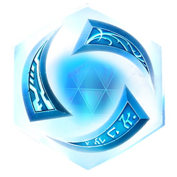

1.인적사항
|  | 성명(한글) | 김태성 | 성명(영문) | KIM TAE SEONG |
|---|---|---|---|---|
| 생년월일 | 1996-08-26 | 성별 | 남 | |
| 병역사항 | 군필 | 보훈대상여부 | X | |
| 현주소 | 충청북도 음성군 금왕읍 시티프라디움 102동 1005호 | |||
| 연락처 | 010-6239-2741 | taeseOng@naver.com | ||
2.학력사항
| 기간(년,월) | 학교명(학위) | 전공학과 | 학점 / 만점 | 소재지 |
|---|---|---|---|---|
| 2015.03~2021.02 | 금오공과대학교(학사) | 컴퓨터공학과 | 3.45/4.5 | 경상북도 구미시 |
| 2012.03~2015.02 | 음성고등학교 | - | - | 충청북도 음성군 |
3.교내외 활동사항
| 교내활동 | 활동기간(년,월) | 활동명 | 소속 | 내용 |
|---|---|---|---|---|
| 2015~현재 |
|
컴퓨터공학과 |
컴퓨터 공학과 학술 동아리
'셈틀꾼'에서 파이썬,C언어 등 프로그래밍 멘토를 진행 하였으며, 2019년 1년 동안 회 장을 맡아 동아리 운영을 하 였음. |
|
| 2015.03~2015.12 | 학생회 사무차장 | 컴퓨터공학과 | 컴퓨터 공학과 학생회 '낮져
밤이'에서 사무차장으로 활 동을 하였음. |
|
| 2018.12~현재 | System Software Lab | 컴퓨터공학과 | 'System Software 연구실'의
소속 연구원으로서 활동을 하였음. |
|
| 2019.06~현재 | KIT 전공 탐색 가이드 | 입학본부 | 고등학교를 다니며 컴퓨터 공
학과를 소개하는 'KIT 전공탐 색가이드'로 활동을 하였음. |
|
| 2019~2019.12 | 전공멘토(Linux) | 컴퓨터공학과 | 컴퓨터공학과의 Linux 전공
멘토로서 학우들에게 학업에 대한 도움을 주었음. |
|
| 교외 활동 | 내용 | 그냥 | 똑같이 | 썼음 |
| - | - | - | - | |
| - | - | - | - |
4.수상경력
| 일자 | 단체 | 내용 |
|---|---|---|
| 2019.11.29 | 한국정보기술학회 | '대학생 논문경진대회' 은상 |
| 2019.12.12 | 인천테크노파크 | '스마트시티 빅데이터 활용 비즈니스 모델 발굴 공모전' 대상 |